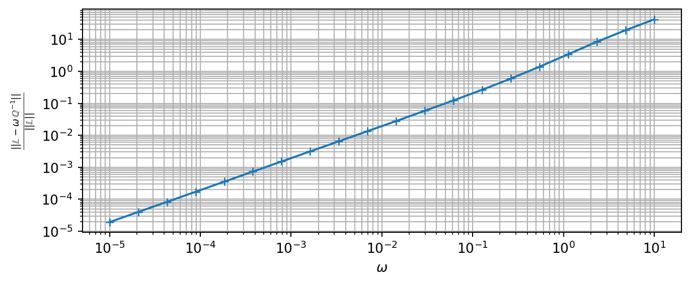

Code
import numpy as np
from echoes import *
import matplotlib.pyplot as plt$$
This section recalls some results about the calculation of the Hill polarization tensors related to a matrix of stiffness \(\mathbb{C}\) and an ellipsoid \(\mathcal{E}_{{\mathbf{\boldsymbol{{A}}}}}\) of equation \[ {\underline{{x}}}\in\mathcal{E}_{{\mathbf{\boldsymbol{{A}}}}} \quad\Leftrightarrow\quad {\underline{{x}}}\cdot({{}^{t}{{\mathbf{\boldsymbol{{A}}}}}}\cdot{\mathbf{\boldsymbol{{A}}}})^{-1}\cdot{\underline{{x}}}\leq 1 \] where \({\mathbf{\boldsymbol{{A}}}}\) is an invertible second-order tensor so that \({{}^{t}{{\mathbf{\boldsymbol{{A}}}}}}\cdot{\mathbf{\boldsymbol{{A}}}}\) is a positive definite symmetric tensor associated to 3 radii (eigenvalues \(a\geq b \geq c\) possibly written \(\rho_1 \geq \rho_2 \geq \rho_3\) for convenience) and 3 angles (orientation of the frame of eigenvectors \({\underline{{e}}}_1, {\underline{{e}}}_2, {\underline{{e}}}_3\)) \[ {{}^{t}{{\mathbf{\boldsymbol{{A}}}}}}\cdot{\mathbf{\boldsymbol{{A}}}}=a^2 {\underline{{e}}}_1\otimes{\underline{{e}}}_1 + b^2 {\underline{{e}}}_2\otimes{\underline{{e}}}_2 + c^2 {\underline{{e}}}_3\otimes{\underline{{e}}}_3 = \sum_{i=1}^3 \rho_i {\underline{{e}}}_i\otimes{\underline{{e}}}_i \tag{B.1}\]
A general expression of the elastic polarization tensor is derived in (Willis, 1977) (see also (Mura, 1987)) \[\begin{aligned} {\mathbb{{P}}}({\mathbf{\boldsymbol{{A}}}},{\mathbb{{C}}})&=\frac{1}{4\pi} \int_{{\lVert{{{\underline{{\zeta}}}}}\rVert}=1} ({\mathbf{\boldsymbol{{A}}}}^{-1}\cdot{\underline{{\zeta}}}){\stackrel{s}{\otimes}} \Big(({\mathbf{\boldsymbol{{A}}}}^{-1}\cdot{\underline{{\zeta}}})\cdot{\mathbb{{C}}} \cdot({\mathbf{\boldsymbol{{A}}}}^{-1}\cdot{\underline{{\zeta}}})\Big)^{-1} {\stackrel{s}{\otimes}}({\mathbf{\boldsymbol{{A}}}}^{-1}\cdot{\underline{{\zeta}}}) {\,\mathrm{d}}S_\zeta\\ &= \frac{\det{{\mathbf{\boldsymbol{{A}}}}}}{4\pi} \int_{{\lVert{{{\underline{{\xi}}}}}\rVert}=1} \frac{{\underline{{\xi}}}{\stackrel{s}{\otimes}} ({\underline{{\xi}}}\cdot{\mathbb{{C}}} \cdot{\underline{{\xi}}})^{-1} {\stackrel{s}{\otimes}}{\underline{{\xi}}}}{{\lVert{{{\mathbf{\boldsymbol{{A}}}}\cdot{\underline{{\xi}}}}}\rVert}^3} {\,\mathrm{d}}S_{\xi} \end{aligned} \tag{B.2}\]
When \({\mathbb{{C}}}\) is arbitrarily anisotropic, it is necessary to resort to numerical cubature to estimate \({\mathbb{{P}}}\) as proposed in (Ghahremani, 1977), (Gavazzi and Lagoudas, 1990) or (Masson, 2008). However in some cases of anisotropy, analytical solutions are available ((Withers, 1989), (Barthélémy, 2020)). The case of isotropic matrix is particularly developed in the next section.
In this section, the matrix is assumed isotropic so that its stiffness tensor writes by means of a bulk \(k\) and shear \(\mu\) or Lamé \(\lambda\) and \(\mu\) moduli or even Young modulus \(E\) and Poisson ratio \(\nu\) with \(k=\frac{E}{3(1-2\nu)}\) and \(\mu=\frac{E}{2(1+\nu)}\). \[\begin{aligned} {\mathbb{{C}}} =& {} 3k{\mathbb{{J}}}+2\mu{\mathbb{{K}}} = 3\lambda{\mathbb{{I}}}+2\mu{\mathbb{{K}}}\\ & \quad\textrm{with}\quad J_{ijkl}=\frac{\delta_{ij}\delta_{kl}}{3}, I_{ijkl}=\frac{\delta_{ik}\delta_{jl}+\delta_{il}\delta_{jk}}{2} \textrm{ and } {\mathbb{{K}}}={\mathbb{{I}}}-{\mathbb{{J}}} \end{aligned} \tag{B.3}\]
Introducing Equation B.3 in Equation B.2 leads to after some algebra \[ {\mathbb{{P}}}= \frac{1}{\lambda+2\,\mu} {\mathbb{{U}}} +\frac{1}{\mu}({\mathbb{{V}}}-{\mathbb{{U}}}) \] where the tensors \({\mathbb{{U}}}\) and \({\mathbb{{V}}}\), depending only on the ellipsoidal tensor \({\mathbf{\boldsymbol{{A}}}}\) of Equation B.1, are given by (see (Barthélémy, 2020)) \[\begin{aligned} {\mathbb{{U}}} &= \frac{\det{{\mathbf{\boldsymbol{{A}}}}}}{4\pi} \int_{{\lVert{{{\underline{{\xi}}}}}\rVert}=1} \frac{{\underline{{\xi}}}\otimes{\underline{{\xi}}}\otimes{\underline{{\xi}}}\otimes{\underline{{\xi}}}} {{\lVert{{{\mathbf{\boldsymbol{{A}}}}\cdot{\underline{{\xi}}}}}\rVert}^3}{\,\mathrm{d}}S_{\xi}\\ &= \frac{1}{4\pi} \int_{{\lVert{{{\underline{{\zeta}}}}}\rVert}=1} \frac{% ({\mathbf{\boldsymbol{{A}}}}^{-1}\cdot{\underline{{\zeta}}}) \otimes ({\mathbf{\boldsymbol{{A}}}}^{-1}\cdot{\underline{{\zeta}}}) \otimes ({\mathbf{\boldsymbol{{A}}}}^{-1}\cdot{\underline{{\zeta}}}) \otimes ({\mathbf{\boldsymbol{{A}}}}^{-1}\cdot{\underline{{\zeta}}}) }{{\lVert{{{\mathbf{\boldsymbol{{A}}}}^{-1}\cdot{\underline{{\zeta}}}}}\rVert}^4} {\,\mathrm{d}}S_{\zeta} \end{aligned}\] and \[\begin{aligned} {\mathbb{{V}}} &= \frac{\det{{\mathbf{\boldsymbol{{A}}}}}}{4\pi} \int_{{\lVert{{{\underline{{\xi}}}}}\rVert}=1} \frac{{\underline{{\xi}}}{\stackrel{s}{\otimes}}{\mathbf{\boldsymbol{{1}}}}{\stackrel{s}{\otimes}}{\underline{{\xi}}}} {{\lVert{{{\mathbf{\boldsymbol{{A}}}}\cdot{\underline{{\xi}}}}}\rVert}^3}{\,\mathrm{d}}S_{\xi}\\ &= \frac{1}{4\pi} \int_{{\lVert{{{\underline{{\zeta}}}}}\rVert}=1} \frac{% ({\mathbf{\boldsymbol{{A}}}}^{-1}\cdot{\underline{{\zeta}}}) {\stackrel{s}{\otimes}} {\mathbf{\boldsymbol{{1}}}} {\stackrel{s}{\otimes}} ({\mathbf{\boldsymbol{{A}}}}^{-1}\cdot{\underline{{\zeta}}}) }{{\lVert{{{\mathbf{\boldsymbol{{A}}}}^{-1}\cdot{\underline{{\zeta}}}}}\rVert}^2} {\,\mathrm{d}}S_{\zeta} \end{aligned}\] For an arbitrary ellipsoid defined by Equation B.1, the components of \({\mathbb{{U}}}\) and \({\mathbb{{V}}}\) write \[\begin{aligned} U_{iiii}&=\frac{3(I_i-\rho_i^2I_{ii})}{2} \quad\forall\, i\in\{1,2,3\}\\ U_{iijj}=U_{ijij}=U_{ijji}&=\frac{I_j-\rho_i^2I_{ij}}{2} =\frac{I_i-\rho_j^2I_{ij}}{2} \quad\forall\, i\neq j\in\{1,2,3\} \end{aligned}\] and \[\begin{aligned} V_{iiii}&=I_i\quad\forall\, i\in\{1,2,3\}\\ V_{ijij}=V_{ijji}&=\frac{I_i+I_j}{4} \quad\forall\, i\neq j\in\{1,2,3\} \end{aligned}\] where the coefficients \(I_i\) and \(I_{ij}\) are given by (note that \(I_i\) and \(I_{ij}\) are adapted from those provided in (Kellogg, 1929) and (Eshelby, 1957): they differ by a factor of \(4\pi/3\) for \(I_{ij}\) with \(i\neq j\) and by \(4\pi\) for the others)
In this last case of spherical inclusion (\({\mathbf{\boldsymbol{{A}}}}={\mathbf{\boldsymbol{{1}}}}\)), \({\mathbb{{U}}}\) and \({\mathbb{{V}}}\) are simply decomposed as \[ {\mathbb{{U}}}=\frac{1}{3}{\mathbb{{J}}}+\frac{2}{15}{\mathbb{{K}}} \quad\textrm{ and }\quad {\mathbb{{V}}}=\frac{1}{3}{\mathbb{{I}}} \]
The case of cracks corresponds to ellipsoids for which the smallest radius is very small compared to the two others, in other words the characteristic tensor \({\mathbf{\boldsymbol{{A}}}}\) Equation B.1 can be written here \[ {\mathbf{\boldsymbol{{A}}}}= {\underline{{\ell}}}\otimes{\underline{{\ell}}}+ \eta\,{\underline{{m}}}\otimes{\underline{{m}}}+ \omega\,{\underline{{n}}}\otimes{\underline{{n}}} \quad\textrm{with}\quad \eta=\frac{b}{a} \quad\textrm{and}\quad \omega=\frac{c}{a} \]
In the case of cracks, it is useful to introduce the second Hill polarization tensor defined as \[ {\mathbb{{Q}}}={\mathbb{{C}}}-{\mathbb{{C}}}:{\mathbb{{P}}}:{\mathbb{{C}}} \] and in particular \(\lim_{\omega\to 0}\omega\,{\mathbb{{Q}}}^{-1}\) in which it is recalled that \({\mathbb{{P}}}\) and thus \({\mathbb{{Q}}}\) depend on \(\omega\) such that the components \(Q_{nijk}\) (with \(n\) corresponding to the crack normal) behave as \(1/\omega\) when \(\omega\) tends towards \(0\). The analytical expressions of this limit are fully detailed in (Barthélémy et al., 2021) which recalls in particular that \({\mathbb{{L}}}\) actually derives from a symmetric second-order tensor \({\mathbf{\boldsymbol{{B}}}}\) as \[ {\mathbb{{L}}}= \lim_{\omega\to 0} \omega\,{\mathbb{{Q}}}^{-1} =\frac{3}{4}\,{\underline{{n}}}{\stackrel{s}{\otimes}}{\mathbf{\boldsymbol{{B}}}}{\stackrel{s}{\otimes}}{\underline{{n}}} \tag{B.4}\]
For an arbitrarly anisotropic matrix, an algorithm allowing to estimate the limit Equation B.4 is proposed in (Barthélémy, 2009) whereas in the isotropic case \({\mathbf{\boldsymbol{{B}}}}\) writes \[ {\mathbf{\boldsymbol{{B}}}}= B_{nn}\,{\underline{{n}}}\otimes{\underline{{n}}} + B_{mm}\,{\underline{{m}}}\otimes{\underline{{m}}} + B_{\ell\ell}\,{\underline{{\ell}}}\otimes{\underline{{\ell}}} \] with \[\begin{aligned} B_{nn}&=\frac{8\,\eta\,(1-\nu^2)}{3\,E}\, \frac{1}{\mathcal{E}_\eta}\label{eq:Bnn}\\ B_{mm}&=\frac{8\,\eta\,(1-\nu^2)}{3\,E}\, \frac{1-\eta^2}{\left(1-(1-\nu)\,\eta^2\right) \,\mathcal{E}_\eta-\nu\,\eta^2\,\mathcal{K}_\eta}\\ B_{\ell\ell}&=\frac{8\,\eta\,(1-\nu^2)}{3\,E}\, \frac{1-\eta^2}{(1-\nu-\eta^2)\,\mathcal{E}_\eta+\nu\,\eta^2\,\mathcal{K}_\eta} \end{aligned}\] where \(\mathcal{K}_\eta=\mathcal{K}(\sqrt{1-\eta^2})\) and \(\mathcal{E}_\eta=\mathcal{E}(\sqrt{1-\eta^2})\) are the complete elliptic integrals of respectively the first and second kind (see (Abramowitz and Stegun, 1972)). If the crack is circular, the components of \({\mathbf{\boldsymbol{{B}}}}\) become \[ B_{nn}=\frac{16\,(1-\nu^2)}{3\,\pi\,E} \quad\textrm{;}\quad B_{mm}=B_{\ell\ell}=\frac{B_{nn}}{1-\nu/2} \]
import numpy as np
from echoes import *
import matplotlib.pyplot as pltC = stiff_Enu(1.,0.2) ; print(C)Order 4 ISO tensor | Param(size=2)=[ 1.66667 0.833333 ] | Angles(size=0)=[ ]
[ 1.11111 0.277778 0.277778 0 0 0
0.277778 1.11111 0.277778 0 0 0
0.277778 0.277778 1.11111 0 0 0
0 0 0 0.833333 0 0
0 0 0 0 0.833333 0
0 0 0 0 0 0.833333 ]
Note that in Echoes it is necessary to provide an aspect ratio \(\omega\) for the crack even if the crack compliance is actually calculated as a limit (not depending on \(\omega\))
ω = 1.e-4
L = crack_compliance(spheroidal(ω), C) ; print(L)[[0. 0. 0. 0. 0. 0. ]
[0. 0. 0. 0. 0. 0. ]
[0. 0. 1.22230996 0. 0. 0. ]
[0. 0. 0. 0.67906109 0. 0. ]
[0. 0. 0. 0. 0.67906109 0. ]
[0. 0. 0. 0. 0. 0. ]]tω = np.logspace(-5,1,20)
tabδ = []
for ω in tω:
Q = hill_dual(spheroidal(ω), C)
Lω = ω*np.linalg.inv(Q)
δL = np.linalg.norm(Lω-L)/np.linalg.norm(L)
tabδ.append(δL)
plt.figure(figsize=(8,3))
plt.loglog(tω,tabδ,'+-')
plt.xlabel(r"$\omega$")
plt.ylabel(r"$\frac{||\mathbb{L}-\omega\,\mathbb{Q}^{-1}||}{||\mathbb{L}||}$")
plt.grid(True,which='both')
plt.show()